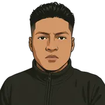
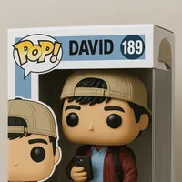
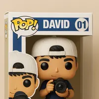
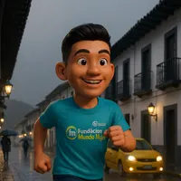
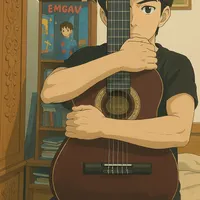
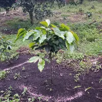

Desarrollo Web
- HTML 80%
- CSS 60%
- JavaScript 40%
- React 50%
- Node.js 50%

Sobre míActualmente soy estudiante de Ingeniería de Sistemas, con un gran interés en el desarrollo web. Me apasiona la creación de soluciones digitales y la construcción de experiencias online funcionales y atractivas.

Aunque mi enfoque académico es la tecnología, mi corazón también late por la fotografía. Encuentro en ella una vía de expresión artística y una manera de capturar momentos únicos y perspectivas interesantes del mundo que me rodea.

En cuanto a deportes, soy entusiasta del running, la natación y el baloncesto. Disfruto de la disciplina y la energía que cada uno aporta, tanto a nivel físico como mental.

Además, un amateur en guitarra. Explorar el mundo de la música y aprender a tocar este instrumento es una actividad que me relaja y me permite desarrollar una nueva forma de creatividad.

Mi conexión con la tierra se manifiesta en mi labor como agricultor. Disfruto del proceso de siembra y cosecha, cultivando alimentos frescos y valorando la importancia de la sostenibilidad y el respeto por el medio ambiente en el campo.

En mis tiempos libres, también colaboro como repartidor de Rappi. Esta experiencia me permite interactuar con diversas personas de la ciudad y contribuir a la economía local, moviéndome de manera ágil para realizar entregas eficientes.
Ver canal de RappiEste espacio es una ventana a mis diferentes facetas: desde mis avances en el desarrollo web hasta mis exploraciones fotográficas, pasando por mi actividad deportiva, mis primeros pasos con la guitarra, mi labor en la agricultura y mis recorridos como repartidor. ¡Espero que disfrutes conociéndome un poco más!
Aquí puedes explorar de forma interactiva algunas de mis habilidades y cuánto las he desarrollado.
¿Tienes alguna pregunta, propuesta o simplemente quieres saludar? ¡No dudes en ponerte en contacto conmigo a través del formulario o mis redes sociales!
david.pinchao@email.com
+57 3XX XXX XXXX
Popayán, Cauca, Colombia